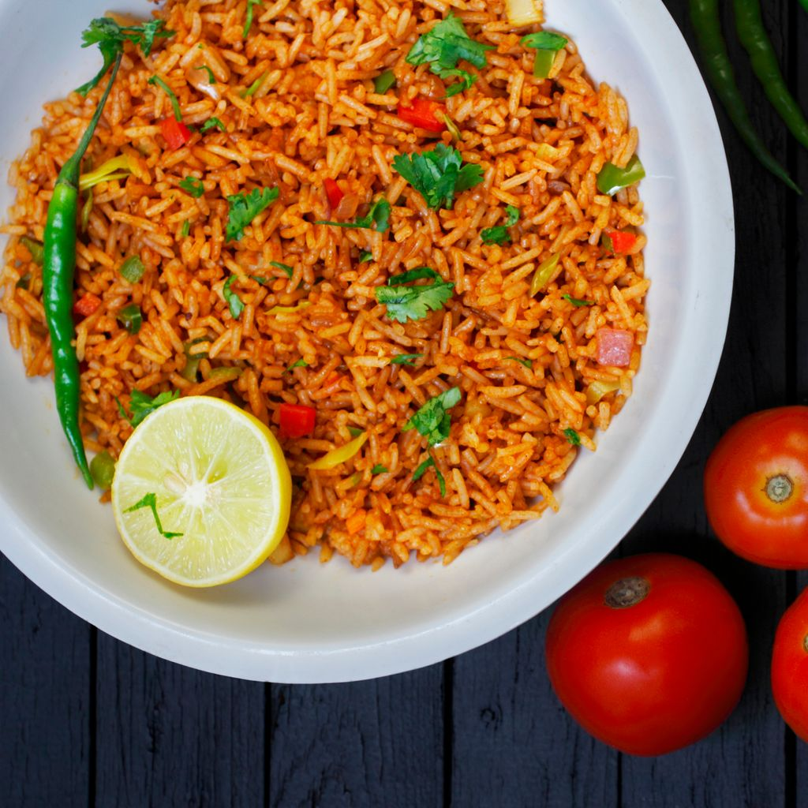

Recettes avec TOMACO
Inspirez-vous avec nos recettes savoureuses à base de concentré de tomates TOMACO !

Poulet à la sauce TOMACO
Un classique de la cuisine congolaise avec une sauce onctueuse et parfumée.
Pizza maison à la TOMACO
Une pâte croustillante, une base tomate relevée : la pizza comme on l’aime !

Riz sauté à la tomate
Facile, rapide et savoureux, parfait pour les repas du quotidien.